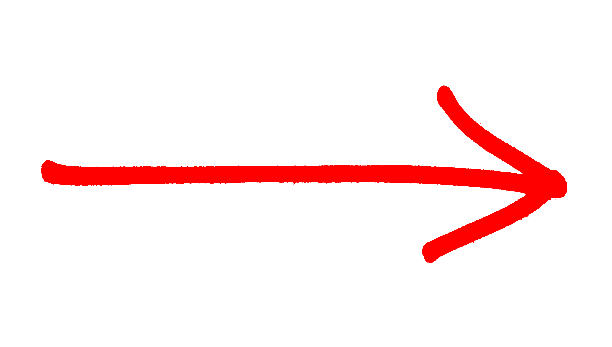

|

_, err = fd.Write(p0)
if err != nil {
return err
}
_, err = fd.Write(p1)
if err != nil {
return err
}
_, err = fd.Write(p2)
if err != nil {
return err
}
// and so on
|
type errWriter struct {
w io.Writer
err error
}
func (ew *errWriter) write(buf []byte) {
if ew.err != nil {
return
}
_, ew.err = ew.w.Write(buf)
}
|
ew := &errWriter{w: fd}
ew.write(p0)
ew.write(p1)
ew.write(p2)
// and so on
if ew.err != nil {
return ew.err
}
|
write method that stops writing to w as soon as it hits the first error.
This encapsulates the repetitive error handling and lets them simplify code